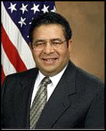

Reginald J. Brown Army, Defense Official
Reginald J. Brown, 65, who retired in January as assistant secretary of the Army for manpower and reserve affairs, and spent much of this year as a senior executive officer for the under secretary of defense for personnel and readiness, died Dec. 17 at his home in Solomons. He had pancreatic cancer.
After active-duty service in the Army, Mr. Brown began his federal career in the early 1970s. His positions included: associate director for economic analysis at the Defense Manpower Commission; executive director of the President's Commission on Military Compensation; and director of energy, chemicals and public utilities in the Office of Price Monitoring of the Council on Wage and Price Stability.
For much of the 1980s, he was a senior fellow for energy and strategic studies at Georgetown University's Center for Strategic and International Studies.
He was an assistant administrator of the U.S. Agency for International Development before joining the Army Department in 2001.
Reginald Jude Brown was a native of New Orleans and a 1961 graduate of the U.S. Military Academy at West Point, N.Y. He received a master's degree in public administration at the John F. Kennedy School of Government at Harvard University.
Starting in 1961, he spent a decade in the Army, served in the Vietnam War and rose to the rank of major. His decorations included the Bronze Star and the Meritorious Service Medal.
His federal honors included the Army's Distinguished Civilian Service Medal, the Navy's Distinguished Public Service Award and the Secretary of Defense Medal for Outstanding Public Service.
He was a board member of Capital Technology Information Services of Rockville, which provides software for managing large-scale clinical trials; and Caelum Research Corp. of Rockville, a government contracting firm specializing in aerospace engineering and applied sciences.
He had a second home in Alexandria.
Survivors include his wife, Emilia Chong Brown, whom he married in 1963, of Solomons and Alexandria; two children, Eric Brown of Vienna and Denise Lawson of Springfield; a brother; two sisters; and five grandchildren.
© 2005 The Washington Post Company
Remembrances:
Memorial Service Tributes:
Eulogy to Reggie Brown
Deputy Secretary, U.S. Treasury Department
December 28, 2005
Everly-Wheatley Funeral Home
Alexandria Virginia
On February 3rd of this year, I was among those privileged to attend Reggie Brown’s retirement party at the Army-Navy Country Club in Arlington. What a joyous evening that was, with not just good food and drink, but also healthy doses of the faith, family, and friends that symbolized the life of dedicated service we honored that evening.
Thus, it was quite a shock when Emmy called me last week with the news of Reggie’s death. But she softened the blow by asking if I would give a brief remembrance to help celebrate the life of the husband, father, grandfather, friend, and soldier/serviceman we honor again today, at the spiritual retirement ceremony our heavenly Father has waiting for us all.
Of course, I immediately said yes to Emmy – how can anyone say no to that smiling face and sweet voice? – but in so doing I knew I would have to reveal a secret Reg and I kept between us and smiled about often for almost forty years: that the current Deputy Secretary of the Treasury received his lowest grade at West Point in Economics 101, taught by a newly-minted Harvard MBA graduate named Reginald J. Brown. Fortunately, I seem to have retained far more of what Reggie taught me than I was able to convey years ago during daily recitations on Paul Samuelson’s epic Economics text. That semester’s encounter with Reg in a windowless room of Thayer Hall launched both a professional and personal relationship that spanned decades of service together both in and out of uniform.
Reg was a proud member of the West Point Class of 1961 – whose motto was “Second to None. Only 534 of the original 741 members of the Class – Reg high among them – received their diplomas from then-Vice President Lyndon Johnson on June 7, 1961. That was two months before the Berlin Wall went up; 15 months before the Cuban Missile Crisis; two years before President Kennedy’s assassination; and four years before regular Army units went into Vietnam. What an era was just beginning.
After Reggie completed a decade of dedicated uniformed service as an Airborne Ranger in the United States, Korea, and in combat in Vietnam – the proud unit patches at the foot of the casket tell that story – he commenced a distinguished career in a wide variety of civilian service positions, including the Defense Manpower Commission, the President’s Commission on Military Compensation, the Office of Wage and Price Stability, and the Congressional Budget Office. After a stint in the private sector, including service as a Senior Fellow at the Center for Strategic and International Studies – or, as it was sometimes known, “Social Sciences Department South” – Reg returned to government service in 1989 as Assistant Administrator of the Agency for International Development under the first President Bush and Secretary of State Jim Baker. It was my great honor while serving as Undersecretary of State to swear Reg in to this important position – and Reg was diplomatic enough that day to mention in his remarks only our West Point connection and not economics grades. Reg’s service was absolutely superb during the four years of the first Bush Administration, which saw the fall of the Berlin Wall and collapse of the Soviet Union that so dominated the Army that Reg had entered over 30 years before.
After another successful tour in the private sector, Reg returned to government as Assistant Secretary of the Army for Manpower & Reserve Affairs in 2001. As you have heard and will hear, he was the exact right man for that critical position during the Army’s swiftest personnel transformation ever after terrorists hit his troops – literally and figuratively – on September 11, 2001. As a reservist mobilized shortly after that fateful day, I both saw and benefited from Reg’s unparalleled knowledge of and care for the Army and its people. And even in the midst of the ‘round-the-clock schedule he kept, Reg never hesitated to take time for others – always for his beloved family but also including treating my Dad and me to lunch after the two of them had met at a dinner. When my Dad, a retired Army Colonel, died less than 6 months later, he had in his pocket the Army coin Reg had given him that day at lunch.
Reggie Brown began a life of service by raising his right hand on the Plain at West Point in the summer of 1957, and I am but one of the legions of people whose lives he touched and whose careers he inspired. The poem entitled “If” by Rudyard Kipling has some passages that capture this life of service we celebrate today:
If you can keep your head when all about you
Are losing theirs and blaming it on you
If you can meet with Triumph and Disaster
And treat those two imposters just the same
If you can talk with crowds and keep your virtue
Or walk with kings -- nor lose the common touch
Yours is the Earth and everything that’s in it
The earth was certainly Reggie Brown’s, and now so much more.
Well done, Soldier. Be thou at peace.
Eulogy/Remembrance
Good Morning. I am honored that Emmy asked me to speak about my relationship with Reggie as colleague and co-worker. I only hope that I can do justice to this tribute on behalf of the many soldiers and civilian employees with whom Reggie worked, and who will honor his memory. I am sure that I could have done some research, and have prepared an eloquent talk highlighting the accomplishments of Reginald Brown, and his lasting contributions to our nation. However, this morning I would like to talk about my personal observations and recollections about the time I spent with Reggie.
I remember the first time that we met. It was early the Spring in 2002. I was stationed in Germany, serving soldiers as a commander. I was asked to come to Washington to interview for the position as Executive Officer for the Assistant Secretary of the Army. I was not particularly enamored with the thought of returning to the Pentagon for a THIRD sentence, now serving with soldiers in the field after 5 years on staff, I certainly did not care about going to work for some “suit.” So my interview strategy was to try to be as opinionated as possible, and when I ended with “if you hire me, you will have to put up with me speaking my mind”…the answer was “you are hired.” I knew at that moment that I was probably in trouble.
Once in the job, I clearly came to understand, that I was not working for some “garden variety” presidential appointee. As you all know, Reggie Brown was a man of incredible intellect and dedication, who accepted his authority and responsibility to the Army with solemn commitment. Reggie Brown made it his business to be well informed about every issue, so that he could make the right decision for the Army and the soldiers. This combination made for some interesting times as Reggie dealt with commanders, staff officers, and civilian managers across the Army.
LTC Steve Apland, one of Reggie’s Military Assistants, was called upon frequently to assistant his boss in preparing for meetings and conferences. Initially, Steve would provide some very broad responses to requests for information on Army units and organizational capabilities from his boss. It did not take long for Steve to understand, that a general answer was not what the Secretary was looking for. Graduating number one in his class in Military History, Reggie leveraged that background with his own curiosity and “homework,” so when he asked Steve a question, he already knew most of the general background on the subject…Steve had to adjust his approach. Reggie was equally prepared in the financial arena. Some of the most interesting conversations about a budget topic often started with a question by the Secretary that started with a statement that went something like this: “When you were here 6 months ago on this topic, you told me that number was X, NOT the number you showed me today.”
Each of these potentially uncomfortable encounters with the Secretary were handled in the most positive and professional manner, motivating each of us to do better, so we would not let the boss down.
Reggie was a man we wanted to serve.I would like to mention briefly two anecdotes that illustrate Reggie Brown’s commitment to doing the right thing by soldiers and the right thing for the Army. During my tenure with him, this was often a very delicate balance to strike.
First, as a part of his duties, Reggie decided on cases of soldiers requesting some re-consideration for adverse personnel actions, such as involuntary separation from the Army and even clemency for those in confinement. Not one of these decisions was ever a “rubber stamp” of a chain of command recommendation, as LTC Butch Alexander will attest. Butch is the staff officer through whom many of these requests flowed. When called into the Secretary’s Office, Butch knew he would not have to brief on the case, because Secretary Brown would have already studied it. A meeting of this sort was to help Reggie deliberate, and decide on an issue that would impact the life of a soldier, his or her family, and the institution. An individual soldier’s request was never dealt with in a matter of fashion.
As the Assistant Secretary, Mr. Brown was the official empowered to mobilize reserve units and soldiers for the Global War on Terrorism. Recognizing the Army’s urgent need to mobilize Reserve and National Guard units for duty in the war, Secretary Brown never forgot that there was a person attached to that duffle bag, and generally a family and an employer to consider. Secretary Brown knew that with a stroke of his pen, he was going to influence thousands of lives—sometimes with the most serious consequences. Mr. Dan Denning, MG Pete Chiarelli, and Mr. Bob Smiley spent many nights trying to answer the question… ”Please tell me why this unit and all of its soldiers cannot receive 30 days notice before they have to go off to war?”
I only had the opportunity to serve with Reggie Brown for a short 14 months. In his capacity as Assistant Secretary, there are many more that served with him longer. Certainly across the Army, there were more that he influenced by his decisions. One thing that we all have in common is that for short periods or long, through personal contact, or as a result of a policy decision, there are thousands across the Army who have positively been touched by Reggie Brown.
I returned to the Pentagon somewhat reluctantly to work for “a suit.” I am honored and humbled to be standing here trying to memorialize the tremendous work of a truly gifted and dedicated public servant, who contributed enormously to our Army. We salute a great man who has the heart of a soldier.
Eulogy/Remembrance
On behalf of my family, I’d like to thank each and every one of you for coming here today. We are deeply honored that so many friends and loved ones have gathered to say farewell to my father. I know that he would be both pleased and humbled at the turnout.
I’d also like to thank Deacon Steve Morello for officiating over the service today. And to the other speakers, thank you for the kind words about my father.
Today is the 18th anniversary of my paternal grandfather’s funeral. When my mother asked me to say a few words at my father’s service, I thought back to that day. My dad delivered the eulogy for Pop that day and it was eloquent, moving and mesmerizing. One of my mother’s close friends who was in attendance said to my mother afterward, “Wow! I sure hope Regi can speak at my funeral.”. You see, among his many other gifts, Dad was an accomplished public speaker, a skilled orator who had been captain of the debate team at West Point. Those of you who have heard him speak in a public setting know exactly what I am talking about.
Well, here I am 18 years to the day after my Pop’s funeral standing in the same shoes that my father stood in on that day in 1987 and, dad, I’ve got to tell you, “You left some mighty big shoes to fill”. Unfortunately for those of you in attendance today, I am not the polished orator that my father was. But, I guess I will have to do. You’re gonna have to put up with me for a few minutes while I talk about my dad.
There is something special about the way that a son idolizes his father and this son standing before you is no exception. We sons certainly look up to and respect our mothers as well, but with our fathers it is different. Not only do you look up to and respect your father, but you also aspire to grow up to be just like him.
When I was young, my father was larger than life to me. I felt so much pride and admiration for him. Really, I was in awe of him. He cut such a striking presence, the soldier, the West Pointer, the army ranger. I was five years old the year that my dad was stationed in Vietnam and I remember playing soldier, pretending to be him.
Well, here I am today, 41 years old and I realize that I have never stopped being that little boy looking up to his father with a sense of awe and reverence. When he was sworn in as Assistant Secretary of the Army for Manpower and Reserve Affairs in August, 2001 – I felt the same mix of admiration and pride.
Many of you are already aware of my dad’s distinguished career in public service and his many professional accomplishments. The same defining characteristics observed by those who knew him professionally were also evidenced in his private life. He did not put on airs. What you saw is what you got. And what you got was a man of great honor and integrity, a man who was not concerned with taking the easy path, but with taking the right path. He was not a complicated man in many ways. He was straightforward and didn’t believe in short cuts.
He saw things in a certain way. I remember watching football games with him as a young child. It would infuriate him to no end when a punt returner or running back would run sideways with the ball, “east-west”, trying to run around defenders. Dad was a “north-south” guy. Get the ball and run straight up the field, directly towards the goal line. If anyone is in your way, meet them head on, don’t try to run from them or go around them.
I imagine that was much the same approach that he took against his opponents when he boxed at West Point and was undefeated with 10 wins and one draw, the one draw being against a much taller man. My father was not large in stature. When he graduated from West Point, he was all of about 135 lbs. But what he lacked in physical size, he made up for in heart and intelligence and determination.
As a child, I remember my dad telling me about a man named Bill Deuel who was a fellow member of the Class of 61 at West Point. When they were at West Point the cadets would sometimes go on field exercises which could involve walking long distances. When they were out on a field exercise, someone would have to carry the machine gun which was quite heavy. My dad described how this big fellow, I think he may have been an Army football player, got fatigued carrying the heavy machine gun and could not handling lugging it over the long distances they were traveling. He told me how Bill Deuel, who was another little guy like my dad, a gymnast, took the machine gun from the much larger man and carried it along with his own gear for the duration of the exercise and never got tired or needed help. I could tell that Bill Deuel’s strength of will and determination impressed my dad. And my dad was a pretty hard man to impress.
On September 30, 1966 while serving as a battalion advisor in the Republic of Vietnam, hostile fire claimed Bill’s life. Bill is interred at the West Point cemetery where my father will be buried tomorrow. I know that dad will be proud to be laid to rest with Bill and the many other valiant men who are buried there.
It was the sort of determination described in these stories from and about my father that helped spur my dad from his modest beginnings in a housing project in Richmond, California to student body president of his high school to his congressional appointment to West Point and all of the accomplishments that followed.
I know that my father had a deep and abiding appreciation for the gift of life. He had a knowledge that true peace and contentment must come from within one’s self and cannot be found through the attainment of material possessions or outward achievements. In talking to him when he first found out about his illness, he shared with me that he was at peace and that he would be okay, no matter what the outcome.
I have just a few words for my family:
Mom, dad told me more than once during his illness that he did not know what he would do without you. That applies not just to these past few months but to the 42 years that the two of you were together. You were the love of his life and he was a very lucky man to have you and he knew that.
Denise, I know that this has been a difficult time for you and that you have taken this hard, but I hope there is some small solace in knowing how much dad appreciated everything you did for him during his last months. I saw a closeness between the two of you that touched me as I watched you care for him.
Ethan, I know my sister is grateful for the support that you have provided to her during this time.
Just as I am grateful to my wife, Kelley, for her support. Kelley, thanks for holding down the fort at home those days that I drove straight to the hospital from work and did not get home until late. Days when you were with the baby all day and then had to take care of her all evening as well with no relief. Thanks for getting on me about seeing my dad when I was taking it for granted that he would be around longer and assuming that he still had a good 6 to 9 months left.
And, Monique, Shannon, Danny, Kelley and Alexa, grandpa loved you all very much and cherished the time that he was able to spend with you.
A friend of mine sent me a note of condolence this week. In his note, he mentioned that he still thinks about his dad every single day, even 15 years after his passing. After reading his note, it struck me that while we are saying goodbye today, that I will carry my father with me forever. A part of him will always be with me. The lessons he taught me, the influence he had on me, his wisdom and advice, all of these things will persist.
Dad, we love you and will miss you terribly.
Thank you.
Funeral Service Tributes:
Eulogy/Remembrance
Delivered by Joe Fishburne '61
I AM PROUD TO STAND BEFORE YOU THIS AFTERNOON AND SPEAK WITH YOU ABOUT REGINALD JUDE BROWN. REGGIE BROWN IS MY FRIEND. ON THE SECOND OF JULY1957 WHEN I WALKED THROUGH THE SALLYPORT TO ENTER WEST POINT, HE WASN’T THE FIRST CADET I MET. AT THE END OF THAT LONG FIRST DAY AFTER THE CLASS OF 1961 HAD PLEDGED TO DEFEND THE CONSTITUTION OF THE UNITED STATES, REGGIE AND I TALKED OF OUR ANXIETIES OF BEING AT WEST POINT AND WHAT MAY LIE AHEAD OF US. REGGIE WAS MY ROOMMATE FOR THOSE FIRST TWO MONTHS OF BEAST BARRACKS. AS TEENAGERS AND VERY YOUNG ADULTS, WE WERE SIDE BY SIDE LEARNING IMMUTABLE PRINCIPLES AND LAYING DOWN THE FOUNDATIONS OF DUTY, HONOR, COUNTRY.
SOMEWHERE TOWARD THE MIDDLE OF BEAST BARRACKS, I CAME TO KNOW MR. SHEETS, THE BRIGADE SERGEANT MAJOR WHO HAD OBSERVED ME NAPPING IN A MILITARY CLASS. MR. SHEETS INVITED ME TO STOP BY HIS ROOM AFTER DINNER, I DISCUSSED THIS WITH REGGIE AND WE HAD NO IDEA WHAT WAS IN STORE FOR ME BUT AGREED THAT IT WASN’T GOING TO BE GOOD!
I REPORTED TO MR. SHEETS AT THE APPOINTED HOUR AND WAS INFORMED THAT HE WANTED TO CONDUCT A UNIFORM FORMATION. THIS MEANT THAT HE WOULD TELL ME IN WHAT UNIFORM I WAS TO REPORT AND THAT I WOULD DO SO WITHIN A SPECIFIED AMOUNT OF TIME. MR. SHEETS’ ROOM WAS IN THE FAR CORNER OF CENTRAL AREA AND MY AND REGGIE’S ROOM WAS IN THE SOUTH MOST CORNER OF SOUTH AREA. I WAS TOLD THE FIRST UNIFORM AND AN INCREDIBLY SHORT PERIOD OF TIME BY WHEN I MUST RETURN TO MR. SHEETS’ ROOM IN THAT UNIFORM. AS I FRANTICALLY DASHED INTO OUR ROOM, I INFORMED REGGIE AS TO WHAT I HAD TO DO WHILE CHANGING MY UNIFORM. AT THAT TIME WE HAD BEEN ISSUED APPROXIMATELY THIRTEEN DIFFERENT UNIFORMS OR UNIFORM COMBINATIONS. I HURRIEDLY THREW ON THE REQUIRED UNIFORM, REGGIE CHECKED THAT I HAD IT RIGHT AND DASHED BACK TO MR. SHEETS MAKING IT JUST IN TIME AND WAS GIVEN THE NEXT UNIFORM TO WEAR AND TIME IN WHICH TO RETURN. WHEN I GOT BACK TO OUR ROOM, REGGIE HAD ALL OF MY UNIFORMS LAID OUT IN ORDER SO THAT I COULD MORE SPEEDILY MAKE THE REQUIRED CHANGE. THANKS TO REGGIE’S FORESIGHT AND THE TEAMWORK WE HAD DEVELOPED, I WAS ABLE TO MAKE ALL OF THE REQUIRED UNIFORM CHANGES WITHIN THE TIME LIMITS GIVEN. REGGIE IS MY FRIEND!
REGGIE DID WELL ACADEMICALLY GRADUATING HIGH IN OUR CLASS. HE WAS ALSO A MILITARY LEADER AND SERVED ON THE BATTALION STAFF OUR FIRST CLASS YEAR. HOWEVER, REGGIE’S ACHILLES HEEL WAS SWIMMING. ALL CADETS HAD TO PASS BASIC SWIMMING SURVIVAL SKILLS IN ORDER TO GRADUATE. REGGIE WAS NOT A SWIMMER AND DID NOT PASS SURVIVAL SWIMMING WITH MOST OF THE CLASS. AS A RESULT, HE WAS INVITED FOR EXTRA INSTRUCTION THAT HAD TO BE CARVED OUT OF TIME THAT WOULD OTHERWISE BE SPENT ON ACADEMICS OR OTHER CADET ACTIVITIES. REGGIE JOINED WHAT WAS EUPHEMISTICALLY KNOWN AS THE “ROCK SQUAD”. IMAGINE MY SURPRISE YEARS LATER TO BE INVITED BY REGGIE AND EMMY TO JOIN THEM FOR A SAIL ON THE CHESAPEAKE BAY. MY WIFE, GINNA, AND I HAVE HAD THE PLEASURE OF SAILING IN THE CARIBBEAN OCEAN WITH REGGIE AT THE HELM. REGGIE ENJOYED BEING ON THE WATER OR WATCHING THE WATER BUT NOT BEING IN THE WATER. HE EMBRACED ADVERSITY AND TURNED IT TO HIS PURPOSE. REGGIE IS MY FRIEND. REGGIE IS A BATTLE TESTED SOLDIER, A BUSINESSMAN, A STATESMAN AND A FRIEND. HIS IMPACT HAS BEEN WIDE AND HIS INFLUENCE HAS TOUCHED THE LIVES OF MANY PEOPLE. I KNOW THESE STATEMENTS TO BE TRUE. AS I SPEAK WITH YOU TODAY REGGIE’S INFLUENCE IS IN MY CHARACTER AND IN MY BEING AND WILL REMAIN WITH ME ALWAYS.
REGGIE BROWN IS MY FRIEND!
Eulogy/Remembrance
Delivered by US Senator John (Jack)
F Reed '71
Emmy, Eric, Denise
We are here, today, to celebrate the life of an extraordinary gentleman, our friend, Reggie Brown.
His life was powerfully shaped by his family and by West Point. He brought great qualities of heart and mind to this place. And, here, he found the great credo of service that would frame his life; Duty, Honor, Country.
Reggie was a soldier and a scholar; a combat infantryman and an expert on public management.
I first met Major Brown when I was assigned to his Economics Section as a Yearling. He was a very talented teacher, but I was just a fair student of economics at that time. However, time and election to the Senate teamed to transform me into one of his best students or so Reggie claimed at his confirmation hearings.
I recall him then as a bright and sympathetic young officer. And, neither his intelligence nor his compassion dimmed over the intervening years.
In the years after my graduation, I was fortunate to join Reggie as an alum of the Department of Social Sciences. Through this connection, I kept track of his work at the Agency for International Development and other important policy positions. Our paths would cross at various SOSH reunions. It was always good to share time with Reggie and Emmy.
Over the last few years, I had the privilege and pleasure to work with Reggie in his role as Assistant Secretary of the Army for Manpower and Reserve Affairs. Reggie, as always, was the consummate professional. He applied his considerable energy and skill to meeting the needs of the Army in one of its most challenging periods as your Army engaged, and continues to be engaged, in sustained combat operations in Iraq and Afghanistan. But, Reggie’s service was particularly special because he knew that it was not just about budgets and line items and press releases. It was about those magnificent young Americans that he had the privilege to lead as a Soldier and now was serving as Assistant Secretary. His vision and his dedication made a profound impact on the lives of our Soldiers.
Reggie also represented the Department of the Army in the deliberations of the West Point Board of Visitors. In this capacity, he made a great contribution to West Point. His quiet advocacy, buttressed by his knowledge of and passion for West Point, was a critical factor in making our voice heard within the Pentagon. He can take credit for enabling much of what the Board of Visitors was able to do for West Point.
Reggie Brown was a man of many qualities, but there is one he possessed that is not at all common. You were always glad to see Reggie Brown. You knew you were in the presence of a true gentleman whose good humor and good sense would be shared freely. He was a man without pretensions; a man whose decency was obvious and compelling.
And, if you were lucky enough, as I was, to share some quiet time with Reggie and Emmy, you witnessed a loving family whose thoughtfulness and kindness embraced you.
In a few moments, we sill sing the Alma Mater and, with special poignancy and meaning, bid our friend, Reggie, “well done, be thou at peace.” He has finished that “long and arduous journey” that began 44 years ago on the Plain; a journey that has taken him through the jungles of war, the halls of academia and the corridors of power; a journey enriched and ennobled by the mutual love of his wife and children and grandchildren; a journey made lighter by the shared laughter of classmates and friends; a journey of principle and purpose and fidelity to those he loved and the Nation and the Army he so proudly served.
The Honorable Reginald Jude Brown, West Point, Class of 1961 “Well Done, Be Thou at Peace”
Dear USMA Class of 1961:
Thank you for all your wonderful and beautiful cards, condolences, prayers, and support. All of this gave me great comfort. I also want to thank you for your donation in Regi’s name to PanCan. I hope one day they can find a cure or at least a way to diagnose this cancer earlier.
The service and burial at West Point were very moving and touched the heart. They picked a perfect spot, under a big tree overlooking the Hudson River.
Warmest
regards,
Emmy Brown
"Brown sworn in as Assistant Secretary of the Army for Manpower and Reserve Affairs"
Senior Assistant Secretary of the Army Reginald Brown Retired January 28, 2005